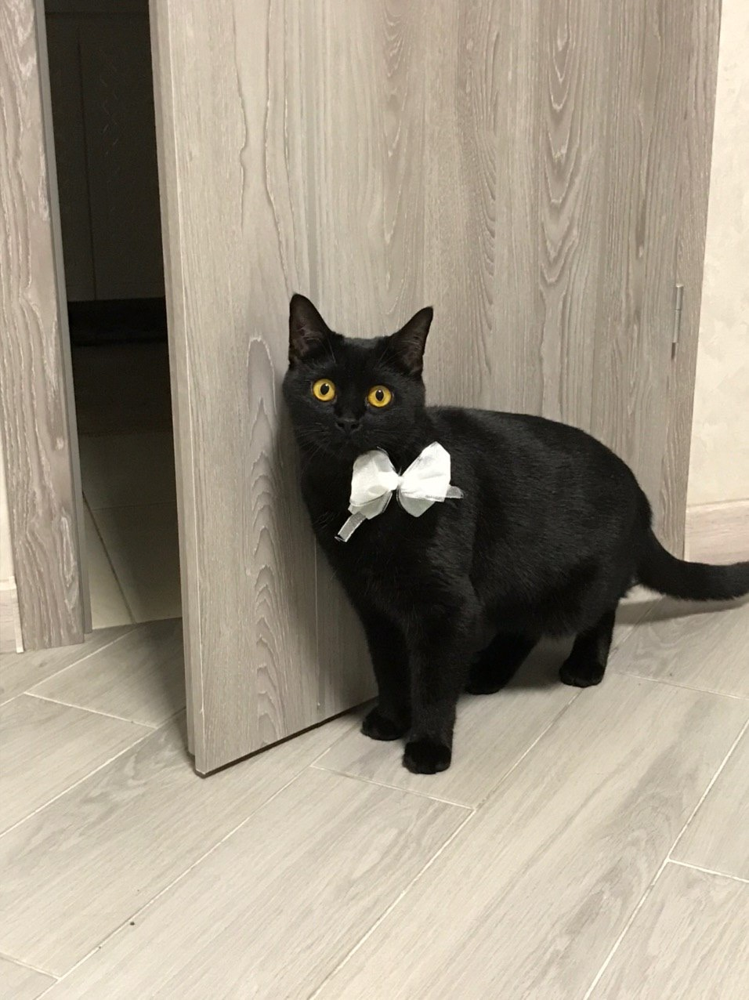

Все життя я дуже любила тварин! В мене були рибки (безіменні), кролик Пуся, хом'як Торпеда і курчатко Джонсонс Бейбі.
Зараз зі мною живе кішка Еля. Їй 2,5 років. Вона ще та бешкетниця. В неї чорна шерсть, жовті очі, довгий хвіст і потужні лапи.
Вона любить корм Роял Канін, спати на батареї, робити сальто та інші вправи, пити воду з крану і дерти шпалери.
